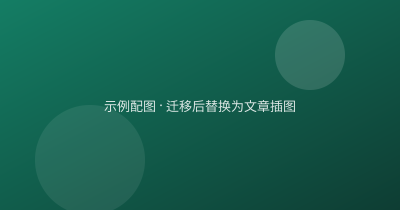

排版样式预览（示例文章）
正文使用衬线字体，行高较宽，适合长文阅读。中文与 English 混排时的 letter-spacing 也做了微调。这一段的作用是展示普通段落的样子——足够长，才能看出换行后的节奏。
二级标题
段落之间留有充足空白。下面是一段引用：
我们读书，是为了知道自己并不孤单。引用块使用左侧竖线与灰色文字，与正文区分。
三级标题
列表的样子：
- 第一项，简短
- 第二项，稍微长一点，看看折行之后对齐是否舒服
- 第三项
图片会居中显示并带圆角：

行内代码 console.log("hello") 与代码块：
function greet(name) {
return `你好，${name}`;
}
最后是一个链接的样式，以及分隔线：
分隔线之后的结尾段落。滚动到这里时，顶部的阅读进度条应该接近满格。